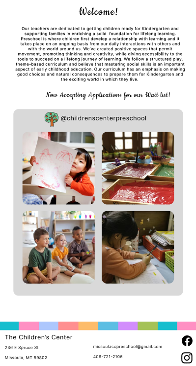
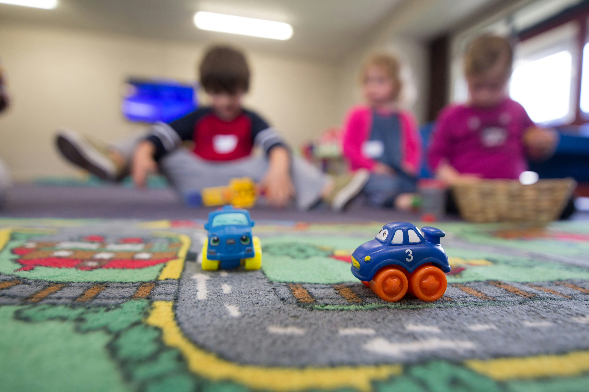
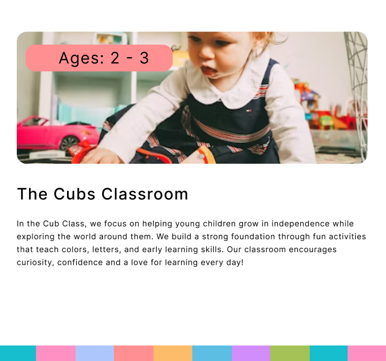

The Children's Center
This redesign project was created for The Children's Center where a friend's mom is the director. Originally I was going to redo their current website to give it an updated feel that would reflect the fun and educational environemnt. Eventhough I didn't end up redesigning for the client, I did still want to explore how I would have done it. The original site was very dated and felt cluttered with too much text and no break points. When I began brainstorming I wanted to keep the same colors but add more imagery, whitespace, and make it feel more like a place kids would want to be.
I wanted the site to highlight the bright and fun atmosphere of the center. To do this I used colored blocks to break up the whitespace and add pops of color. I made sure it was not an overwhelming amount of information and that the pages flowed a lot better.



Learned:
- Figma Components and Connections
- Crafting a Story Through Images
- Logo Design
- Scrolling Effects for User Engagement